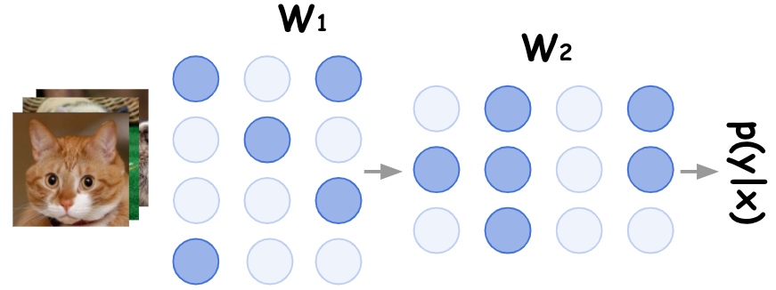
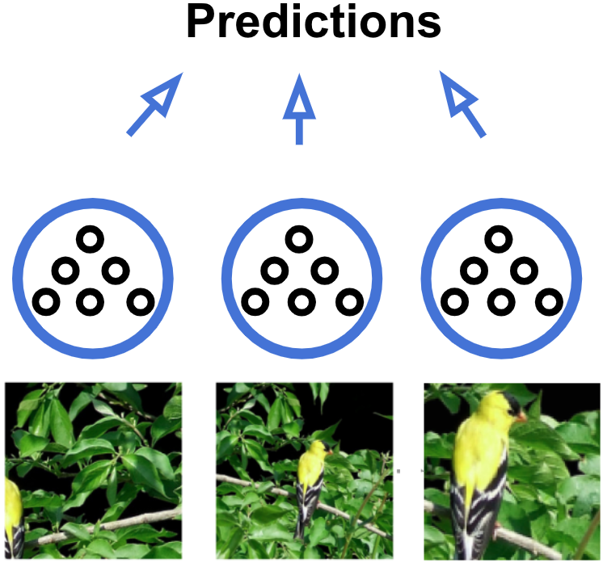
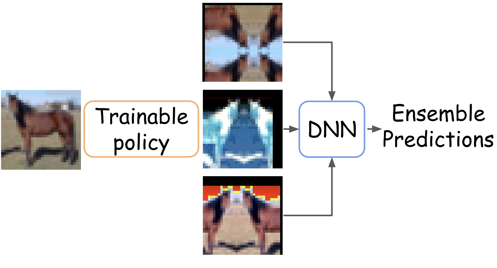
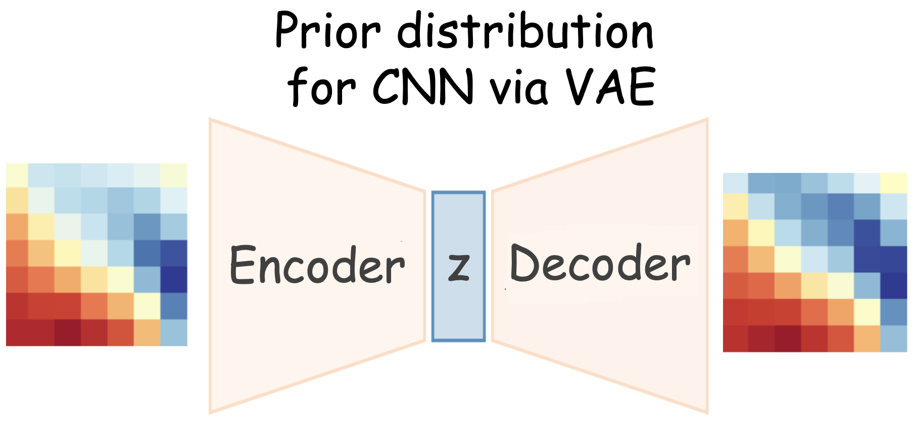
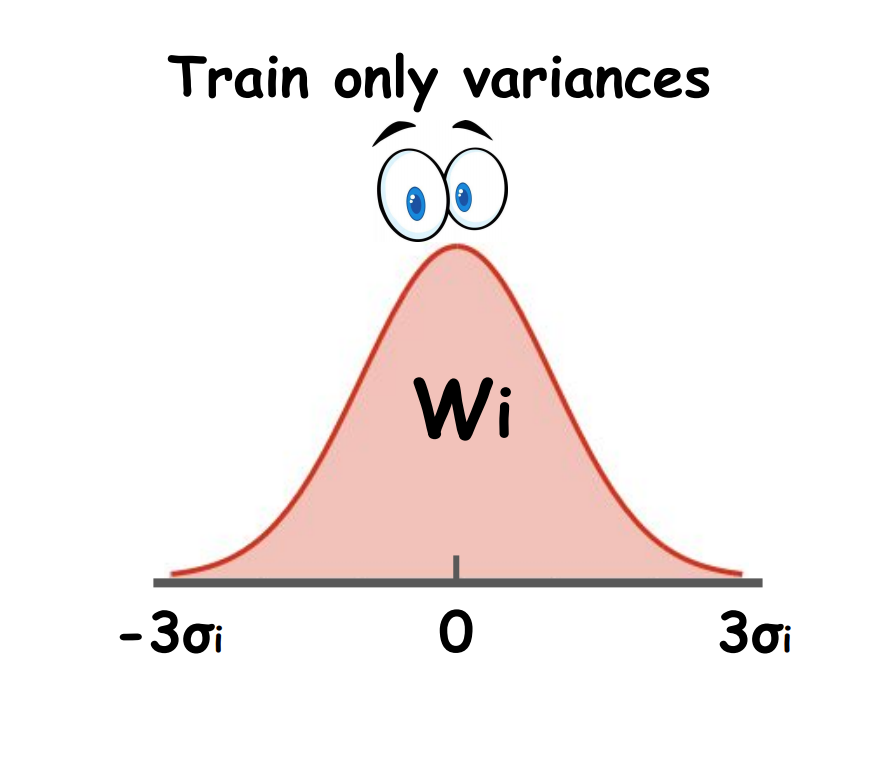
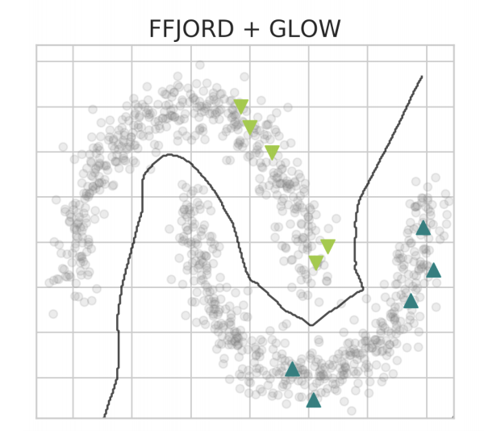
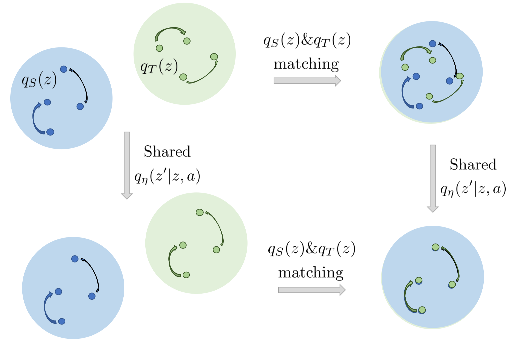
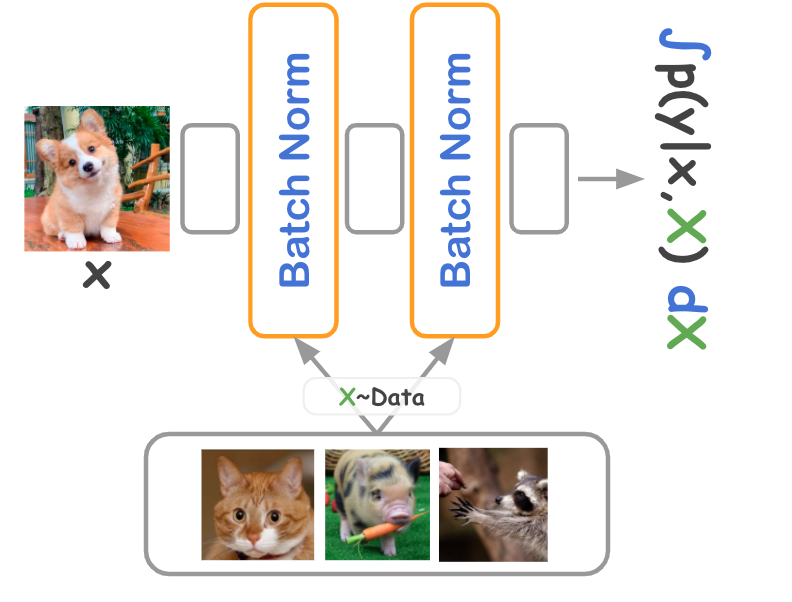
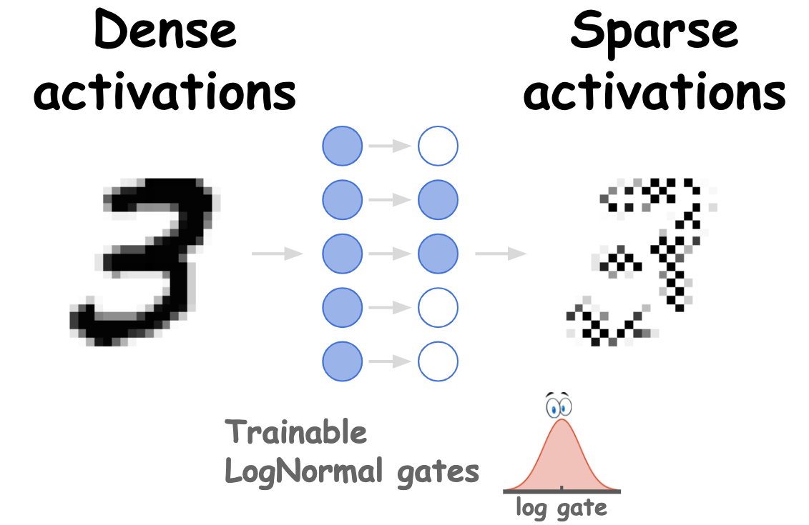
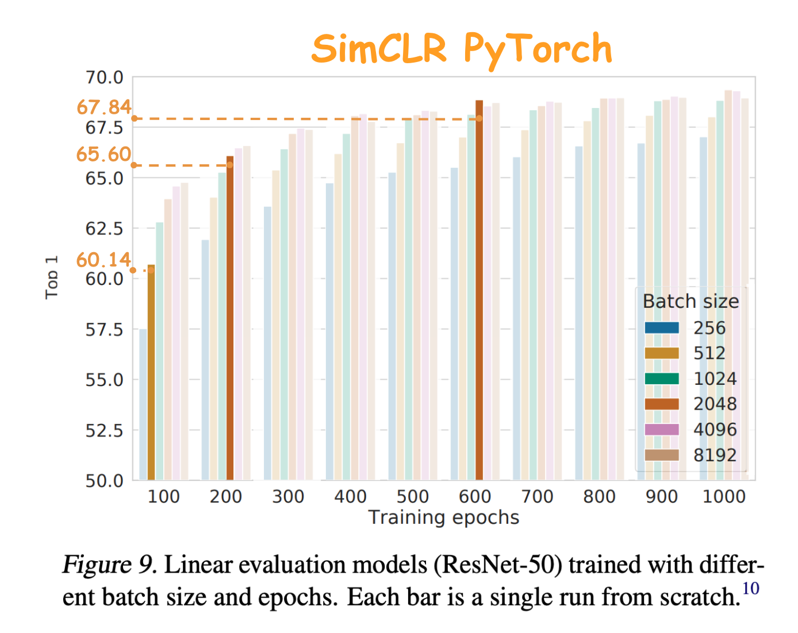

February 2026
IsoDDE is the Isomorphic Labs Drug Design Engine, unlocking a new frontier in drug discovery by providing accurate predictions of novel biomolecular interactions.
I am a Staff Research Scientist at Isomorphic Labs, an Alphabet subsidiary that aims to solve all disease, led by Demis Hassabis and Max Jaderberg. I work on deep learning models for the interaction of drug and protein molecules. Prior to joining Isomorphic, I was a Research Scientist at Samsung and a PhD student at the Bayesian Methods Research Group under the supervision of Dmitry Vetrov.
IsoDDE is the Isomorphic Labs Drug Design Engine, unlocking a new frontier in drug discovery by providing accurate predictions of novel biomolecular interactions.

LaMa uses convolutions in the Fourier space to generalize to a high 2k resolutions, despite being trained on 256x256 images. It achieves a strong performance even in challenging scenarios, e.g. completion of periodic structures.

We show that variational dropout trains highly sparsified deep neural networks, while a pattern of sparsity is learned jointly with weights during training.

The work shows that i) a simple ensemble of independently trained networks performs significantly better than recent techniques ii) a simple test-time augmentation applied to a conventional network outperforms low-parameters ensembles (e.g. Dropout) and also improves all ensembles for free iii) a comparison of the uncertainty estimation ability of algorithms is often done incorrectly in the literature.

We introduce greedy policy search (GPS), a simple but high-performing method for learning a policy of test-time augmentation.

The deep weight prior is the generative model for kernels of convolutional neural networks, that acts as a prior distribution while training on new datasets.

It is possible to learn a zero-centered Gaussian distribution over the weights of a neural network by learning only variances, and it works surprisingly well.

We employ semi-conditional normalizing flow architecture that allows efficiently trains normalizing flows when only few labeled data points are available.

Domain adaptation via learning shared dynamics in a latent space with adversarial matching of latent states.

Inference-time stochastic batch normalization improves the performance of uncertainty estimation of ensembles.

The model allows to sparsify a DNN with an arbitrary pattern of spasticity e.g., neurons or convolutional filters.
Resolution-robust Large Mask Inpainting with Fourier Convolutions. This implementation has gathered over 10,000 stars on GitHub and is widely used in the community for high-quality image editing.

A very simple and short implementation of gradient boosting in just 18 lines of code, designed for educational purposes to illustrate the core mechanics of the algorithm.

A minimal and clean implementation of Real NVP normalizing flows in just 40 lines of PyTorch code, focusing on clarity and ease of understanding.

A minimal working example of Quantile Regression DQN for Distributional Reinforcement Learning, showcasing how to estimate the full distribution of returns.

A short, 50-line pure PyTorch implementation of E(n) Equivariant Graph Neural Networks for molecule property prediction, matching paper performance without external dependencies.

An unofficial reproduction of SimCLR with support for multi-GPU distributed training and performance matching the original paper on ImageNet and CIFAR-10.
A collection of state-of-the-art ensemble methods in PyTorch, including Deep Ensembles, Snapshot Ensembles, cSGLD, and FGE, for improved uncertainty estimation.